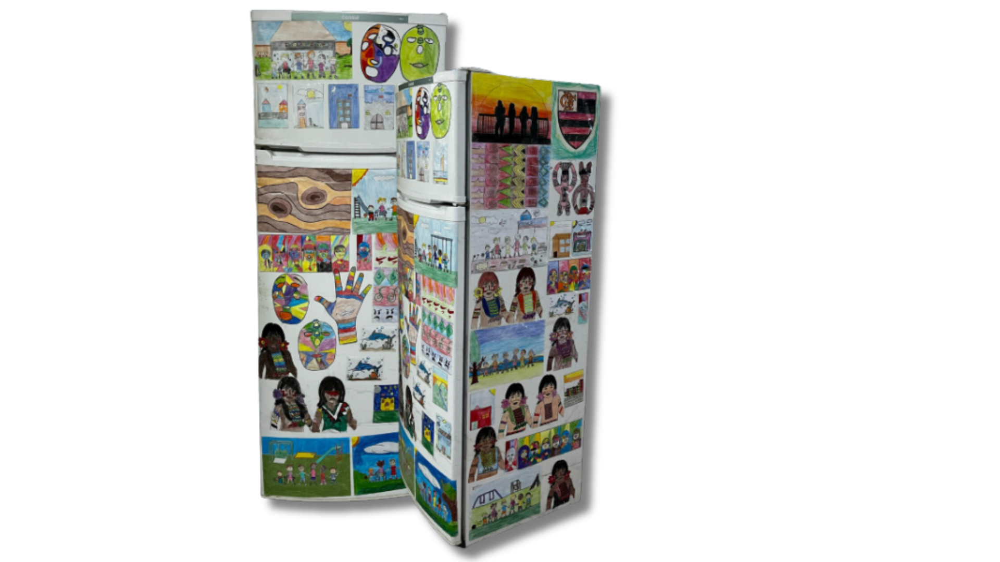

Nossos projetos sociais são focados em educação e saúde promovendo uma transformação significativa na equipe ao expô-la às realidades de crianças e comunidades com pouco acesso a recursos. A vivência com essas realidades reforçou a importância de um ensino que não só transmite conteúdo, mas que também forma cidadãos críticos e capazes de transformar sua realidade.
A equipe reconheceu o papel fundamental da educação na construção de uma sociedade mais justa. Além disso, o projeto abordou a conscientização sobre o câncer e a revenção, informando as comunidades sobre a detecção precoce e a importância de exames regulares, promovendo a saúde preventiva e ampliando a empatia e a responsabilidade social entre os envolvidos.
Geladeira literária
Ao compreender a importância da educação em comunidades vulneráveis, a Blue Marlin Motorsports tomou a iniciativa de criar projetos voltados para a disseminação da maior riqueza do ser humano: o conhecimento. A equipe acredita que, ao promover o acesso à educação, pode não apenas transformar realidades individuais, mas também fortalecer as bases de uma sociedade mais justa e igualitária. O conhecimento, para toda comunidade, é a chave que abre portas e ilumina caminhos, criando um ciclo de desenvolvimento e transformação.
A Unidade Municipal de Ensino Fundamental (UMEF) Paulo Mares Guia, localizada na comunidade de Cobilândia, nas proximidades do SESI em Vila Velha, enfrenta, como muitas escolas públicas, desafios relacionados a recursos. Os docentes e coordenadores, cientes desses desafios, estão comprometidos a oferecer uma educação de qualidade e atividades práticas para seus alunos. Reconhecendo a importância da leitura para a formação de uma sociedade crítica e pensante, a Blue Marlin Motorsports decidiu desenvolver um projeto para democratizar e garantir acessibilidade a leitura entre os estudantes. Através de um sistema de troca de livros chamado "Geladeira Literária", os alunos são desafiados a estimular o hábito da leitura e criar um ambiente de aprendizado que contribua para inclusão e o desenvolvimento de habilidades essenciais.
